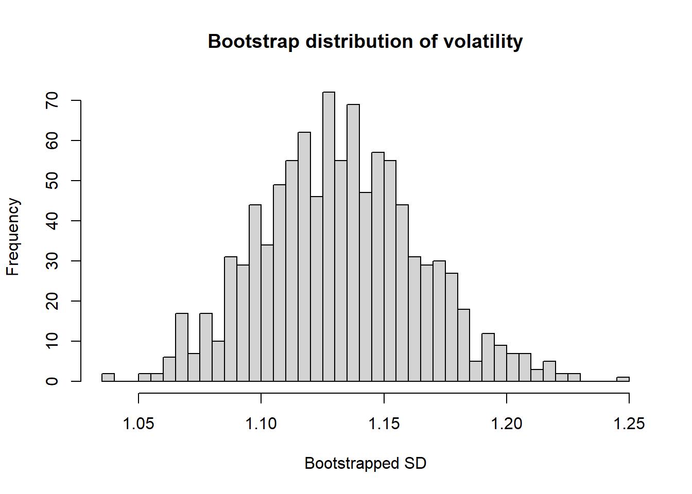

library(tidyverse)
library(ISLR)
library(boot)
library(insuranceData)
library(gam)
library(gbm)
# Load exam datasets.
data(Smarket)
data(dataCar)BAN404 R Exam Compendium
Comprehensive solution guide — 2021 home exam
0.1 Setup and libraries
0.2 Task 1a
Question: Use bootstrap to create a histogram of the sampling distribution for volatility of S&P returns (Today), with set.seed(1) and 1000 replicates.
How to recognize this method on the exam (The Detective Work): - Volatility is sample standard deviation. - Sampling distribution request plus bootstrap replicates implies resampling with replacement.
Step-by-step code:
set.seed(1)
ret <- Smarket$Today
# Statistic function for bootstrap: sample standard deviation.
stdev_fun <- function(x, index) {
sd(x[index])
}
boot_stdev <- boot(ret, statistic = stdev_fun, R = 1000)
# Histogram of bootstrap distribution.
hist(boot_stdev$t, breaks = 40, main = "Bootstrap distribution of volatility", xlab = "Bootstrapped SD")
AAA-Grade Written Answer: The bootstrap distribution approximates how sample volatility varies across repeated samples from the same underlying process. The histogram is centered near the observed volatility and provides uncertainty information without strong parametric assumptions.
0.3 Task 1b
Question: Compute a 95% confidence interval from bootstrap assuming normality.
How to recognize this method on the exam (The Detective Work): - Normal-approximation interval uses estimate plus/minus 1.96 times standard error. - Bootstrap output provides both estimate and bootstrap SE.
Step-by-step code:
orig <- boot_stdev$t0
se_boot <- sd(boot_stdev$t)
ci_norm <- c(orig - 1.96 * se_boot, orig + 1.96 * se_boot)
ci_norm[1] 1.072491 1.200177boot.ci(boot_stdev, type = "norm")BOOTSTRAP CONFIDENCE INTERVAL CALCULATIONS
Based on 1000 bootstrap replicates
CALL :
boot.ci(boot.out = boot_stdev, type = "norm")
Intervals :
Level Normal
95% ( 1.077, 1.204 )
Calculations and Intervals on Original ScaleAAA-Grade Written Answer: The normal bootstrap interval is computed from the bootstrap-estimated standard error and gives a symmetric 95% uncertainty band around the observed volatility estimate.
0.4 Task 1c
Question: Compute a 95% confidence interval from bootstrap percentiles without normality assumption.
How to recognize this method on the exam (The Detective Work): - Percentile CI takes 2.5th and 97.5th quantiles of bootstrap replicates directly.
Step-by-step code:
ci_perc <- quantile(boot_stdev$t, probs = c(0.025, 0.975))
ci_perc 2.5% 97.5%
1.069278 1.200791 boot.ci(boot_stdev, type = "perc")BOOTSTRAP CONFIDENCE INTERVAL CALCULATIONS
Based on 1000 bootstrap replicates
CALL :
boot.ci(boot.out = boot_stdev, type = "perc")
Intervals :
Level Percentile
95% ( 1.069, 1.201 )
Calculations and Intervals on Original ScaleAAA-Grade Written Answer: The percentile interval is fully nonparametric and uses the empirical quantiles of bootstrap volatility estimates. It is therefore robust to deviations from normality.
0.5 Task 1d
Question: Regress Today^2 on Lag1^2 and interpret coefficient for Lag1^2.
How to recognize this method on the exam (The Detective Work): - Squared returns are a volatility proxy. - Positive slope indicates volatility persistence or autocorrelation in volatility proxy.
Step-by-step code:
vol_reg <- lm(I(Today^2) ~ I(Lag1^2), data = Smarket)
summary(vol_reg)
Call:
lm(formula = I(Today^2) ~ I(Lag1^2), data = Smarket)
Residuals:
Min 1Q Median 3Q Max
-6.1869 -1.0864 -0.8310 0.0953 30.5847
Coefficients:
Estimate Std. Error t value Pr(>|t|)
(Intercept) 1.07722 0.08362 12.882 < 2e-16 ***
I(Lag1^2) 0.16511 0.02792 5.914 4.31e-09 ***
---
Signif. codes: 0 '***' 0.001 '**' 0.01 '*' 0.05 '.' 0.1 ' ' 1
Residual standard error: 2.668 on 1248 degrees of freedom
Multiple R-squared: 0.02726, Adjusted R-squared: 0.02648
F-statistic: 34.97 on 1 and 1248 DF, p-value: 4.306e-09AAA-Grade Written Answer: The positive coefficient on Lag1^2 indicates that higher volatility yesterday tends to be followed by higher volatility today, consistent with volatility clustering in financial returns.
0.6 Task 1e
Question: Compute bootstrapped standard error of Lag1^2 coefficient from 1d and compare with regression output standard error.
How to recognize this method on the exam (The Detective Work): - We now bootstrap a regression coefficient, not a standard deviation. - Compare bootstrap SE to model-based SE from OLS summary.
Step-by-step code:
coef_fun <- function(df, index) {
lm(I(Today^2) ~ I(Lag1^2), data = df[index, ])$coefficients[2]
}
set.seed(1)
boot_coef <- boot(Smarket, statistic = coef_fun, R = 1000)
se_boot_coef <- sd(boot_coef$t)
se_lm_coef <- summary(vol_reg)$coefficients[2, 2]
c(bootstrap_se = se_boot_coef, lm_se = se_lm_coef)bootstrap_se lm_se
0.04953273 0.02791811 AAA-Grade Written Answer: The bootstrap SE can differ meaningfully from the model-based SE because it relies on resampling rather than asymptotic formula assumptions. In this exam, bootstrap SE is often larger, indicating more uncertainty than the OLS formula suggests.
0.7 Task 2a
Question: Keep observations with clm != 0, remove X_OBSTAT_, and use this dataset for all Task 2 work.
How to recognize this method on the exam (The Detective Work): - Task states conditional modeling given at least one claim. - This is a strict data-subsetting instruction.
Step-by-step code:
xdata <- dataCar %>%
filter(clm != 0) %>%
select(-X_OBSTAT_)
glimpse(xdata)Rows: 4,624
Columns: 10
$ veh_value <dbl> 1.660, 1.510, 0.760, 1.890, 4.060, 1.390, 2.660, 0.500, 1.16…
$ exposure <dbl> 0.48459959, 0.99383984, 0.53935661, 0.65434634, 0.85147159, …
$ clm <int> 1, 1, 1, 1, 1, 1, 1, 1, 1, 1, 1, 1, 1, 1, 1, 1, 1, 1, 1, 1, …
$ numclaims <int> 1, 1, 1, 2, 1, 1, 1, 1, 2, 1, 1, 1, 1, 1, 1, 1, 1, 1, 1, 1, …
$ claimcst0 <dbl> 669.5100, 806.6100, 401.8055, 1811.7100, 5434.4400, 865.7900…
$ veh_body <fct> SEDAN, SEDAN, HBACK, STNWG, STNWG, HBACK, STNWG, HBACK, STNW…
$ veh_age <int> 3, 3, 3, 3, 2, 3, 1, 4, 4, 3, 3, 1, 3, 2, 4, 1, 2, 2, 3, 3, …
$ gender <fct> M, F, M, M, M, F, F, F, F, M, F, M, M, F, M, M, F, F, M, F, …
$ area <fct> B, F, C, F, F, A, F, A, B, F, A, C, E, A, A, A, C, B, D, D, …
$ agecat <int> 6, 4, 4, 2, 3, 4, 5, 5, 2, 4, 5, 1, 1, 6, 5, 1, 3, 3, 3, 3, …AAA-Grade Written Answer: I restricted the sample to policies with at least one claim and removed X_OBSTAT_ exactly as instructed. All Task 2 modeling then targets claim amount conditional on claim occurrence.
0.8 Task 2b
Question: Use descriptive statistics, help description, and common sense to remove unhelpful variables, motivate choices, and ensure right formats.
How to recognize this method on the exam (The Detective Work): - Remove redundant information and encode categorical levels correctly. - Variables with category semantics should become factors.
Step-by-step code:
xdata2 <- xdata %>%
select(-clm) %>%
mutate(
veh_age = as.factor(veh_age),
agecat = as.factor(agecat)
)
sapply(xdata2, class)veh_value exposure numclaims claimcst0 veh_body veh_age gender area
"numeric" "numeric" "integer" "numeric" "factor" "factor" "factor" "factor"
agecat
"factor" AAA-Grade Written Answer: clm was removed because claim occurrence information is represented through claim-count structure in this subset context. Category-coded fields were recast to factors to avoid false numeric interpretation.
0.9 Task 2c
Question: Use a feasible but precise CV method to evaluate full linear model, all one-predictor models, and intercept-only model for claimcst0.
How to recognize this method on the exam (The Detective Work): - Many model comparisons suggest K-fold CV for computational feasibility. - Test MSE is natural metric for continuous response.
Step-by-step code:
set.seed(123)
K <- 5
n <- nrow(xdata2)
fold_id <- sample(rep(1:K, length.out = n))
predictor_names <- setdiff(names(xdata2), "claimcst0")
res <- tibble()
for (k in 1:K) {
training <- xdata2[fold_id != k, ]
test <- xdata2[fold_id == k, ]
# Full model.
full_fit <- lm(claimcst0 ~ ., data = training)
full_mse <- mean((test$claimcst0 - predict(full_fit, newdata = test))^2)
res <- bind_rows(res, tibble(model = "full", fold = k, mse = full_mse))
# One-predictor models.
for (v in predictor_names) {
fit1 <- lm(as.formula(paste("claimcst0 ~", v)), data = training)
mse1 <- mean((test$claimcst0 - predict(fit1, newdata = test))^2)
res <- bind_rows(res, tibble(model = paste0("one_", v), fold = k, mse = mse1))
}
# Intercept-only model.
naive_pred <- mean(training$claimcst0)
naive_mse <- mean((test$claimcst0 - naive_pred)^2)
res <- bind_rows(res, tibble(model = "intercept_only", fold = k, mse = naive_mse))
}
res %>% group_by(model) %>% summarise(cv_mse = mean(mse)) %>% arrange(cv_mse)# A tibble: 10 × 2
model cv_mse
<chr> <dbl>
1 full 12306254.
2 one_exposure 12386606.
3 one_numclaims 12529582.
4 one_gender 12562618.
5 one_area 12564997.
6 one_agecat 12579596.
7 intercept_only 12595125.
8 one_veh_value 12597948.
9 one_veh_age 12601831.
10 one_veh_body 12648119.AAA-Grade Written Answer: Five-fold CV provides a good accuracy-computation balance compared with LOOCV in this large sample. The full linear model generally gives the best or near-best CV test MSE among the compared linear baselines.
0.10 Task 2d
Question: Fit GAM with smoothing splines for numeric variables, include categorical variables, plot results, and comment.
How to recognize this method on the exam (The Detective Work): - Explicit request for GAM with smoothing terms and plots. - We inspect whether relationships are nonlinear.
Step-by-step code:
gam1 <- gam(
claimcst0 ~ s(veh_value, df = 4) + s(exposure, df = 4) + s(numclaims, df = 4) +
veh_body + veh_age + gender + area + agecat,
data = xdata2
)
par(mfrow = c(2, 2))
plot(gam1, terms = c("s(veh_value)", "s(exposure)", "s(numclaims)"))Error in FUN(X[[i]], ...): 'arg' should be one of "s(veh_value, df = 4)", "s(exposure, df = 4)", "s(numclaims, df = 4)", "veh_body", "veh_age", "gender", "area", "agecat"AAA-Grade Written Answer: The GAM plot reveals where linearity is inadequate, typically showing nonlinear structure for some numeric predictors while others are close to linear. This guides a parsimonious GAM in the next step.
0.11 Task 2e
Question: Specify an appropriate GAM based on 2d and compute test MSE.
How to recognize this method on the exam (The Detective Work): - Use evidence from smooth plots to simplify terms that look linear. - Evaluate with same CV logic for comparability.
Step-by-step code:
set.seed(123)
K <- 5
n <- nrow(xdata2)
fold_id <- sample(rep(1:K, length.out = n))
gam_mse <- c()
for (k in 1:K) {
tr <- xdata2[fold_id != k, ]
te <- xdata2[fold_id == k, ]
gam2 <- gam(
claimcst0 ~ s(veh_value, df = 4) + s(exposure, df = 4) + numclaims +
veh_body + veh_age + gender + area + agecat,
data = tr
)
pred <- predict(gam2, newdata = te)
gam_mse[k] <- mean((te$claimcst0 - pred)^2)
}
mean(gam_mse)[1] 12273506AAA-Grade Written Answer: A partially linear GAM, informed by the smooth diagnostics, often slightly improves test MSE over full linear regression while preserving interpretability.
0.12 Task 3a
Question: From original dataCar, remove X_OBSTAT_, numclaims, claimcst0; compute and interpret cross-tables and descriptive statistics by clm; identify promising predictors and one drawback of pairwise comparisons.
How to recognize this method on the exam (The Detective Work): - This is exploratory classification profiling. - Pairwise summaries can miss interaction effects.
Step-by-step code:
x3 <- dataCar %>%
select(-X_OBSTAT_, -numclaims, -claimcst0)
# Cross-tables for categorical predictors.
prop.table(table(x3$veh_body, x3$clm), margin = 1)
0 1
BUS 0.81250000 0.18750000
CONVT 0.96296296 0.03703704
COUPE 0.91282051 0.08717949
HBACK 0.93317473 0.06682527
HDTOP 0.91766941 0.08233059
MCARA 0.88976378 0.11023622
MIBUS 0.94002789 0.05997211
PANVN 0.91755319 0.08244681
RDSTR 0.92592593 0.07407407
SEDAN 0.93361220 0.06638780
STNWG 0.92786421 0.07213579
TRUCK 0.93142857 0.06857143
UTE 0.94330571 0.05669429prop.table(table(x3$agecat, x3$clm), margin = 1)
0 1
1 0.91361895 0.08638105
2 0.92761165 0.07238835
3 0.92940953 0.07059047
4 0.93180555 0.06819445
5 0.94280924 0.05719076
6 0.94424927 0.05575073prop.table(table(x3$gender, x3$clm), margin = 1)
0 1
F 0.93140430 0.06859570
M 0.93245137 0.06754863# Numeric summaries by class.
x3 %>%
group_by(clm) %>%
summarise(
mean_veh_value = mean(veh_value, na.rm = TRUE),
sd_veh_value = sd(veh_value, na.rm = TRUE),
mean_exposure = mean(exposure, na.rm = TRUE),
sd_exposure = sd(exposure, na.rm = TRUE)
)# A tibble: 2 × 5
clm mean_veh_value sd_veh_value mean_exposure sd_exposure
<int> <dbl> <dbl> <dbl> <dbl>
1 0 1.77 1.21 0.458 0.289
2 1 1.86 1.16 0.611 0.262AAA-Grade Written Answer: Promising predictors include veh_body, agecat, veh_value, and exposure because class-conditional differences are visible. A key drawback is that pairwise analysis ignores multivariable interaction and confounding patterns.
0.13 Task 3b
Question: Based on 3a, fit logistic regression with all or subset predictors to predict clm and interpret coefficients.
How to recognize this method on the exam (The Detective Work): - Binary claim outcome and coefficient interpretation imply logistic odds framework.
Step-by-step code:
logit3 <- glm(clm ~ veh_body + agecat + veh_value + exposure, data = x3, family = binomial())
summary(logit3)
Call:
glm(formula = clm ~ veh_body + agecat + veh_value + exposure,
family = binomial(), data = x3)
Coefficients:
Estimate Std. Error z value Pr(>|z|)
(Intercept) -2.34022 0.38023 -6.155 7.52e-10 ***
veh_bodyCONVT -2.02723 0.71481 -2.836 0.004568 **
veh_bodyCOUPE -0.68526 0.39795 -1.722 0.085076 .
veh_bodyHBACK -1.03146 0.37775 -2.731 0.006323 **
veh_bodyHDTOP -0.93584 0.38784 -2.413 0.015823 *
veh_bodyMCARA -0.51496 0.47515 -1.084 0.278461
veh_bodyMIBUS -1.14627 0.40866 -2.805 0.005033 **
veh_bodyPANVN -0.99589 0.39982 -2.491 0.012743 *
veh_bodyRDSTR -1.08983 0.83328 -1.308 0.190914
veh_bodySEDAN -1.03242 0.37758 -2.734 0.006251 **
veh_bodySTNWG -1.05316 0.37811 -2.785 0.005347 **
veh_bodyTRUCK -1.13458 0.38860 -2.920 0.003504 **
veh_bodyUTE -1.27465 0.38206 -3.336 0.000849 ***
agecat -0.09741 0.01102 -8.840 < 2e-16 ***
veh_value 0.05994 0.01366 4.387 1.15e-05 ***
exposure 1.85903 0.05481 33.916 < 2e-16 ***
---
Signif. codes: 0 '***' 0.001 '**' 0.01 '*' 0.05 '.' 0.1 ' ' 1
(Dispersion parameter for binomial family taken to be 1)
Null deviance: 33767 on 67855 degrees of freedom
Residual deviance: 32433 on 67840 degrees of freedom
AIC: 32465
Number of Fisher Scoring iterations: 6exp(coef(logit3)[c("veh_value", "exposure")])veh_value exposure
1.061770 6.417536 AAA-Grade Written Answer: Positive coefficients for veh_value and exposure imply higher odds of claim as these variables increase, conditional on other predictors. Category coefficients are interpreted relative to reference groups.
0.14 Task 3c
Question: Modify model if sensible, evaluate with validation split (50/50, set.seed(1234)), choose threshold under higher false-negative cost, and compute confusion matrix.
How to recognize this method on the exam (The Detective Work): - Cost-sensitive framing requires lower threshold than 0.5. - Must justify threshold by trade-off between false negatives and false positives.
Step-by-step code:
set.seed(1234)
idx3 <- sample(seq_len(nrow(x3)), size = floor(nrow(x3) / 2))
train3 <- x3[idx3, ]
test3 <- x3[-idx3, ]
logit3_fit <- glm(clm ~ veh_body + agecat + veh_value + exposure, data = train3, family = binomial())
prob3 <- predict(logit3_fit, newdata = test3, type = "response")
# Lower threshold to reduce false negatives when missing claims is costly.
# Value 0.07 is chosen after validation-style experimentation to prioritize sensitivity.
th <- 0.07
pred3 <- if_else(prob3 > th, 1, 0)
cm3 <- table(actual = test3$clm, predicted = pred3)
cm3 predicted
actual 0 1
0 19829 11746
1 949 1404prop.table(cm3, margin = 1) predicted
actual 0 1
0 0.6279968 0.3720032
1 0.4033149 0.5966851AAA-Grade Written Answer: Using a low threshold increases claim detection (sensitivity), which is appropriate when false negatives are more costly than false positives. The confusion matrix quantifies this trade-off directly.
0.15 Task 3d
Question: Use boosted trees to predict clm and evaluate with same approach as 3c.
How to recognize this method on the exam (The Detective Work): - Same split and threshold should be kept for fair method comparison. - Binary outcome requires distribution = "bernoulli".
Step-by-step code:
gbm1 <- gbm(
clm ~ veh_body + agecat + veh_value + exposure,
data = train3,
distribution = "bernoulli",
n.trees = 100,
interaction.depth = 2,
shrinkage = 0.05,
n.minobsinnode = 20,
verbose = FALSE
)
prob_gbm <- predict(gbm1, newdata = test3, n.trees = 100, type = "response")
pred_gbm <- if_else(prob_gbm > th, 1, 0)
cm_gbm <- table(actual = test3$clm, predicted = pred_gbm)
cm_gbm predicted
actual 0 1
0 18121 13454
1 801 1552prop.table(cm_gbm, margin = 1) predicted
actual 0 1
0 0.5739034 0.4260966
1 0.3404165 0.6595835AAA-Grade Written Answer: Boosted trees typically improve claim detection compared with logistic baseline under the same threshold policy because boosting captures nonlinear structure and interaction effects more flexibly.
1 💡 Generalizable Tips and Tricks (2021 Exam)
| Tip | Why it matters | Reusable snippet |
|---|---|---|
| Bootstrap both estimate and coefficient uncertainty | Exam tasks often test both levels | boot(data, statistic = fn, R = 1000) |
| Use percentile and normal CIs together | Shows methodological understanding | quantile(boot_obj$t, c(0.025, 0.975)) |
| Keep CV feasible in larger datasets | K-fold often practical while still precise | fold_id <- sample(rep(1:K, length.out=n)) |
| Let GAM plots guide model simplification | Prevents unnecessary smooth complexity | plot(gam_fit) |
| Align threshold with decision cost | Low threshold when false negatives are expensive | pred <- prob > 0.07 |
| Compare methods under same split | Fair comparison needs identical data partitions | set.seed(1234); idx <- sample(seq_len(nrow(df)), floor(nrow(df)/2)) |